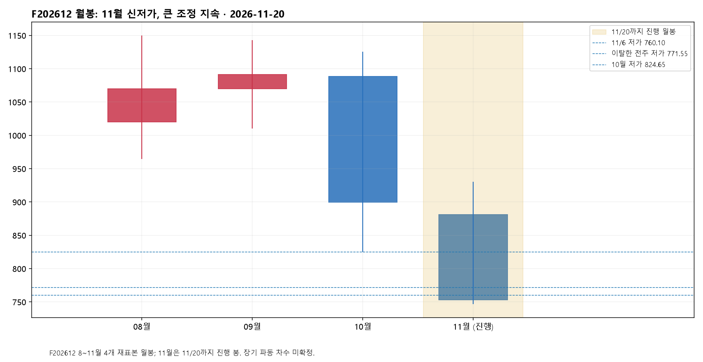
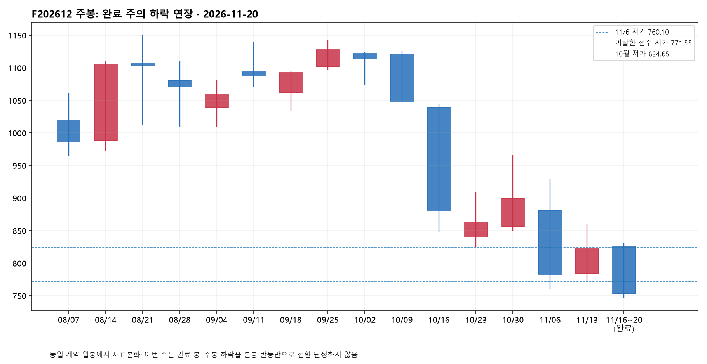
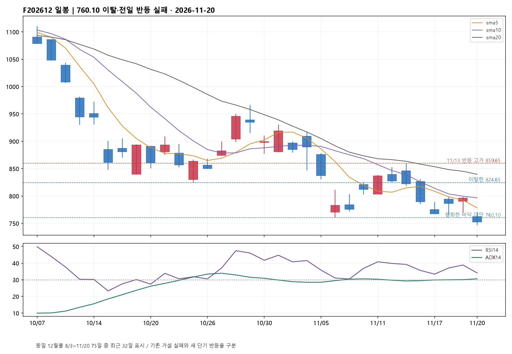
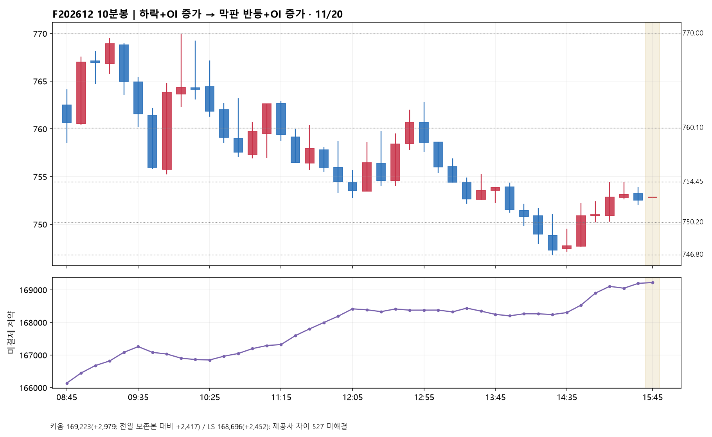
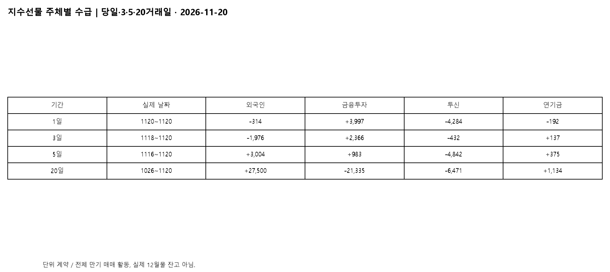
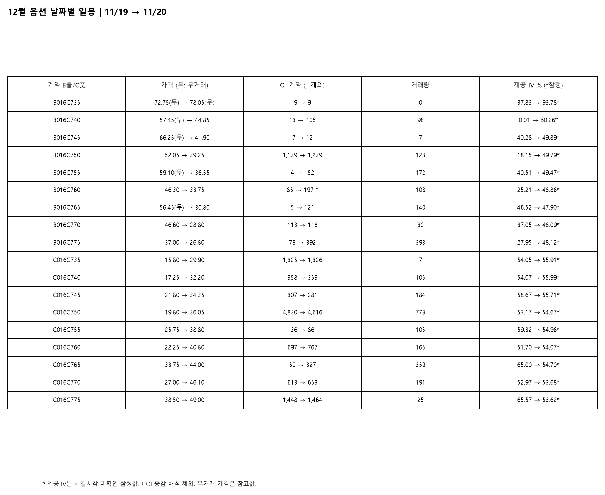

F202612 / A016C000 · 정규장 752.75 · OI 169,223 · 이후 야간 미반영
11/20 F202612 정규장 종가는 752.75, 전일 796.00 대비 -43.25포인트(-5.43%)예요. 월·주·일의 하락 구조가 이어졌고, 장 막판 반등은 아직 그 안의 작은 회복입니다. 어제의 791.20 유지 조건은 갭 하락으로 실패했으며, 기존 큰 바닥 경계 760.10도 일봉으로 이탈했습니다. 첫 눌림은 752.00~750.20을 확인하되, 750.20 위 10분봉 마감·재지지와 754.45 돌파·재지지가 함께 나와야 758.60~760.10 회복을 볼 수 있어요. 760.10 위 일봉 마감·다음 눌림 재지지 전에는 하락 우위 관점을 유지합니다. 750.20 이탈·재저항이면 747.10~746.80을 다시 확인하며, 746.80 아래 10분봉 마감·재저항이면 오늘 저점에서 시작된 반등 가설을 철회합니다. 금융투자 선물 매수는 컸지만 투신 매도와 현물 매도 확산이 상쇄했고, 외국인 선물 순매도 축소만으로 시장 전체가 롱으로 돌아섰다고 해석하기 어렵습니다.
어제 제시한 791.20 유지와 781.95 오후 반등 구조는 시가 762.50부터 무너졌어요. 11/6의 760.10을 큰 바닥으로 보는 기존 대안도 오늘 746.80 신저가와 752.75 종가, 장중 760대 회복 후 재이탈로 철회합니다. 746.80을 새 지지선으로 바꾸어 이전 가설이 맞았다고 설명하지 않습니다. 선호 가설은 11/13 반등 고점 859.65 이후 저점·고점이 낮아지는 하락의 연장입니다. 이것이 상위 하락 충격파인지 더 큰 조정의 마지막 부분인지는 하위파 세분과 장기 원천이 부족해 차수를 확정하지 않아요. 새 대안은 오늘 746.80에서 별도의 단기 바닥 형성이 시작되는 경우입니다. 이 대안은 754.45 돌파·재지지, 758.60~760.10 회복, 이후 762.80과 769.25~770.00 순서로 확인합니다. 770.00 위 일봉 회복은 오늘 장중 하락 구조를 약화시키지만, 어제 저가 769.00부터 798.00까지의 갭과 더 큰 조정을 모두 회복한 것은 아닙니다. 859.65~746.80 하락폭의 38.2% 반등은 789.91, 50%는 803.23으로 계산되지만 먼 참고값이며 당장 도달할 목표나 확정 파동 목표로 제시하지 않습니다.
지수선물 전체 만기 기준 외국인은 -314계약, 기관계는 -276계약, 개인은 +431계약, 기타법인은 +159계약으로 네 배타적 집계의 합은 0입니다. 기관 안에서는 금융투자 +3,997, 투신 -4,284, 연기금 -192계약으로 갈렸어요. 금융투자를 기관계에 다시 더해 전체 매수가 더 많다고 계산하면 중복입니다. 투신은 전일 +810에서 큰 매도로 돌아섰고 금융투자는 전일 +168보다 매수가 확대됐습니다. 최근 3·5·20일 외국인은 -1,976 / +3,004 / +27,500계약, 금융투자는 +2,366 / +983 / -21,335, 투신은 -432 / -4,842 / -6,471, 연기금은 +137 / +375 / +1,134계약이에요. 외국인의 긴 누적 매수와 최근 3일 매도, 금융투자의 긴 누적 매도와 최근 매수가 충돌합니다. 오늘은 매수 주체가 함께 넓어지는 장보다 주체 간 교체와 방어 거래가 섞인 장으로 해석합니다. 각 순매매는 활동량이며 실제 잔고·신규 롱·숏 수량은 아닙니다.
현물 KOSPI는 4,869.96(-5.21%), KOSPI200은 755.34(-5.53%)로 하락했어요. 외국인·금융투자·투신은 현물을 순매도하고 개인·연기금은 순매수했습니다. 금융투자는 선물 매수·현물 매도, 연기금은 선물 매도·현물 매수여서 상품별 헤지·상대가치 거래 가능성을 열어둡니다. 같은 EOD의 KOSPI200 200종목에서 삼성전자·SK하이닉스를 뺀 198종목의 금융투자 순매수 종목 수는 전일 136→78, 기관계 112→92, 외국인 86→86, 투신 93→114, 연기금 97→98개예요. 투신은 매수 종목 수가 늘었지만 나머지 198종목 금액 합계도 순매도여서 폭과 금액의 결론이 다릅니다. 연기금 현물 매수는 두 대형주에 집중됐고 나머지 198종목은 순매도였습니다. SK하이닉스 기타법인 매수가 컸다는 관측을 자사주나 특정 매수 사유로 단정하지 않습니다. 외국인 주식선물은 오늘 +50,755계약으로 전일 매도에서 전환했지만 3·5·20일은 -36,577 / -217,231 / -311,583계약입니다. 프로그램은 당일·3·5·20일 모두 순매도이고 오늘 비차익 매도가 차익 매수를 압도했어요. 시장 베이시스 -2.59, 제공 이론 베이시스 +1.36으로 차이는 -3.95포인트입니다. 전일 -5.09보다 할인은 좁아졌으나 여전히 음수이며, 현물 15:30과 선물 15:45의 비동시 종가 비교라는 한계가 있습니다.
정규 10분봉 표시시각 기준 09:55→11:55 가격은 763.85→754.45, OI는 167,029→168,190(+1,161)으로 하락 중 미결제 참여가 늘었어요. 매도 압력 우위 속 노출 확대라는 해석에 맞지만 누가 신규 숏을 열었는지는 알 수 없습니다. 11:55→14:35에는 가격 -6.70에 OI +110으로 추가 하락에 비해 순증가가 작았습니다. 반면 14:35→15:25에는 가격 747.75→752.50과 OI +895가 함께 올라, 막판 반등을 숏 청산만으로 설명할 수 없어요. 마지막 15:45 단일가는 752.75·OI 169,223으로 직전 표시 봉 대비 +0.25·+28이었습니다. 사용자 제공 14:39 화면의 외국인 -7,931억원과 마감 원본 -649억원을 비교하면 누적 순매매가 +7,282억원 변했고, 기관계는 +9,598→-474억원으로 바뀌었습니다. 이는 서로 다른 시각의 사용자 제공 화면과 마감 원본 비교이며 독립 검증된 체결 시계열이나 신규 포지션 금액은 아닙니다. 장중 강한 외국인 매도를 마감까지 그대로 연장한 설명은 맞지 않지만, 가격 회복과 현물 매수 확산도 아직 충분하지 않았어요.
키움 정규장 OI는 169,223계약이며 오늘 다시 조회한 전일 166,244 대비 +2,979입니다. 어제 보존된 마감 원본 166,806 대비로는 +2,417이에요. 두 전일 값은 모두 11/19 16:45라서 수능일 15:45와 16:45를 혼동한 차이는 아니며, 제공값 변경 원인은 미확정입니다. LS 날짜 지정 일봉과 저장된 마감 후 시세는 168,696, 같은 LS 전일 대비 +2,452로 오늘 키움과 527계약 차이가 남아요. 각각의 원천과 비교를 분리하고 하나의 확정 증가량으로 섞지 않았습니다. OI는 계약 한 건에 롱·숏이 함께 생기는 총 미결제 수이므로 전체 매도 주체를 더하거나 OI 증가분에 명목금액을 곱해 신규 숏 유입액을 계산할 수 없습니다. 가격 하락과 함께 증가한 구간은 약세 압력 해석에 참고할 수 있어도, 신규 매수·매도와 기존 청산의 주체별 분해는 불가능합니다. 일봉 거래량 130,648과 분봉 합계·LS 128,133의 차이 2,515계약도 보존하고 정확한 VWAP·체결 매물대는 제외합니다. 차월 F202703은 744.80, 거래량 77, OI 7,706(+67)으로 얇은 시장이며 12월물 포지션에 합산하지 않습니다.
0787 전체 만기 외국인 콜은 -2,312계약인데 금액은 +3억원으로 방향이 갈리고, 풋은 +3,011계약·+13억원으로 둘 다 매수였습니다. 최근 3·5일 콜은 -602 / -7,010계약, 풋은 +3,959 / +11,254계약입니다. 헤지 수요와 약세 방향 수요 모두 가능한 설명이며 잔존 포지션으로 단정하지 않습니다. 별도로 12/10 만기 735~775의 18개 콜·풋 일봉을 11/19와 비교했어요. 750콜은 가격 52.05→39.25, OI 1,139→1,239(+100), 750풋은 19.80→36.05, OI 4,830→4,616(-214)입니다. 이 두 계약만 보아도 콜 가격 하락·OI 증가와 풋 가격 상승·OI 감소가 같이 나타나므로 풋 상승을 모두 신규 매수로 부를 수 없어요. 770풋은 27.00→46.10, OI +40으로 가격·OI 동반 증가였습니다. 보존된 마감 후 750풋 제공 IV는 53.17→54.67%, 델타는 -0.2839→-0.4472로 변했지만 체결별 시각이 확인되지 않아 잠정 스냅샷 비교로만 제시합니다. 대표 IV는 65.81→63.96으로 낮아진 반면 대표 콜·풋 IV는 각각 46.91→51.26, 83.34→84.71로 높아졌어요. 대표값의 구성·산식과 개별 행사가를 혼동하지 않습니다. 760콜의 OI 증가 112가 당일 거래량 108보다 커 해당 증감 해석은 제외했고, 무거래가 섞인 735·740·745·755·765콜의 전일 대비 가격도 실제 체결 변화로 해석하지 않습니다.
오늘 11/20은 수능일 다음 날의 일반 정규장으로 선물 08:45~15:45를 사용했습니다. 11월 월물 옵션 만기는 11/12에 지났고, 이번 개별 계약 표의 12월 옵션과 12월 선물 만기는 12/10입니다. 오늘을 월물 옵션 만기일이나 만기 전일로 재사용하지 않습니다. 어제 주간물 만기 이후의 헤지 재배치가 오늘 전체 만기 수급에 섞일 수 있지만, 0787 전체 만기 수급을 선택한 12월 계약의 잔고로 연결할 자료는 없습니다. 만기 효과만으로 급락이나 반등을 설명하지 않고 현물·프로그램·베이시스와 다음 거래일의 지속 여부를 함께 확인합니다. 이후 야간 자료는 포함하지 않았으며, 다음 정규장 11/23의 회복·재저항 조건을 확인합니다.
오늘은 금요일이므로 11/16~20의 5거래일 주봉과 수급을 완료 주로 반영했어요. 11/20까지 최근 완료 주와 20일의 동행을 축소 반영한 현물 해석 배율은 투신 1.182·외국인 1.157·금융투자 0.954, 선물은 투신 1.157·연기금 1.013·외국인 0.924·금융투자 0.891입니다. 이것은 제한된 설명용 요약이며 원인별 영향 비중이나 승률이 아닙니다. 새 배율을 과거 날짜에 소급해 예측 성과로 평가하지 않으며 다음 날 예측 배율은 모두 1.000입니다. 관측 기간 10/12~11/20 30거래일에서 외국인·투신 동반 매수와 상승 뒤 다음 날 상승은 현물 3/7, 선물 1/3, 동반 매도와 하락 뒤 하락은 현물 6/13, 선물 0/2였어요. 오늘은 두 시장 모두 동반 매도·하락 조건에 들어왔지만 다음 거래일 결과는 대기 상태라 분모에 넣지 않았습니다. 같은 기간 단순 상승 뒤 상승은 4/12, 하락 뒤 하락은 9/17입니다. 소표본의 0/2를 반등 확정이나 역매수 규칙으로 바꾸지 않으며 내일 확률은 산정하지 않습니다. 현물 외국인의 동행이 더 강하게 보였다는 것과 선물보다 시장을 더 크게 움직였다는 인과는 다릅니다.
가격은 F202612 개별 계약의 8/3~11/20 75개 일봉과 보존된 정규 10분봉을 사용했습니다. 월·주봉은 같은 일봉에서 재표본화했고 11월만 진행 봉, 11/20 주봉은 완료 봉입니다. 현물·지수선물 비교는 10/12~11/20 30거래일, 최근 3일은 11/18~20, 5일은 11/16~20, 20일은 10/26~11/20입니다. 9월 만기 이후 관찰창 9/11~11/20 47거래일의 전체 만기 지수선물 순매매는 외국인 +29,965, 기관계 -29,157, 금융투자 -15,267, 투신 -10,807, 연기금 +1,245계약입니다. 단일 LS 원천의 완결 관찰창이며 실제 12월물 보유 누적·평단은 아닙니다. 개별 만기 초기 잔고·신규/청산 구분이 없어 현재 만기 실제 포지션 누적은 판단 불가로 남겼습니다. 같은 날짜 중복은 제거 대조했고, 과거 공개본과 달라진 현물 값 6건과 조회 방식 간 차이도 별도로 보존했습니다.
KOSPI·KOSPI200의 새 날짜 지정 일봉은 키움과 LS를 교차 대조했습니다. KOSPI는 시가 4,928.51보다 낮은 4,869.96에 마감했고, KOSPI200도 시가 765.00보다 낮은 755.34로 끝나 선물의 약세와 일치합니다. 큰 하락폭 가운데 전일 대비 갭 하락이 크다는 점과 장중 추가 하락을 구분했습니다. 기존 국내 다중 시간대·지수 방향 연구는 11/19, 해외 파일은 더 오래됐고 검증 날짜도 맞지 않아 이번 방향 판단에서 제외했습니다. 따라서 오늘 KOSDAQ·해외 월주일분 차트를 모두 확인한 시장 전체 합의로 확대하지 않습니다. 실패한 선택 연구층이나 보조자료를 과거 latest로 대체하지 않았습니다.

완료 10월 저가 824.65 아래에서 11월 752.75. 이번 달 저점은 746.80으로 낮아졌어요.

11/16~20 완료 주는 시가 826.50·고가 830.80·저가 746.80·종가 752.75. 전주 종가 822.35보다 낮아요.

어제 제시한 791.20 유지와 781.95 오후 반등 구조는 시가 762.50부터 무너졌어요. 11/6의 760.10을 큰 바닥으로 보는 기존 대안도 오늘 746.80 신저가와 752.75 종가, 장중 760대 회복 후 재이탈로 철회합니다. 746.80을 새 지지선으로 바꾸어 이전 가설이 맞았다고 설명하지 않습니다. 선호 가설은 11/13 반등 고점 859.65 이후 저점·고점이 낮아지는 하락의 연장입니다. 이것이 상위 하락 충격파인지 더 큰 조정의 마지막 부분인지는 하위파 세분과 장기 원천이 부족해 차수를 확정하지 않아요. 새 대안은 오늘 746.80에서 별도의 단기 바닥 형성이 시작되는 경우입니다. 이 대안은 754.45 돌파·재지지, 758.60~760.10 회복, 이후 762.80과 769.25~770.00 순서로 확인합니다. 770.00 위 일봉 회복은 오늘 장중 하락 구조를 약화시키지만, 어제 저가 769.00부터 798.00까지의 갭과 더 큰 조정을 모두 회복한 것은 아닙니다. 859.65~746.80 하락폭의 38.2% 반등은 789.91, 50%는 803.23으로 계산되지만 먼 참고값이며 당장 도달할 목표나 확정 파동 목표로 제시하지 않습니다.

정규 10분봉 표시시각 기준 09:55→11:55 가격은 763.85→754.45, OI는 167,029→168,190(+1,161)으로 하락 중 미결제 참여가 늘었어요. 매도 압력 우위 속 노출 확대라는 해석에 맞지만 누가 신규 숏을 열었는지는 알 수 없습니다. 11:55→14:35에는 가격 -6.70에 OI +110으로 추가 하락에 비해 순증가가 작았습니다. 반면 14:35→15:25에는 가격 747.75→752.50과 OI +895가 함께 올라, 막판 반등을 숏 청산만으로 설명할 수 없어요. 마지막 15:45 단일가는 752.75·OI 169,223으로 직전 표시 봉 대비 +0.25·+28이었습니다. 사용자 제공 14:39 화면의 외국인 -7,931억원과 마감 원본 -649억원을 비교하면 누적 순매매가 +7,282억원 변했고, 기관계는 +9,598→-474억원으로 바뀌었습니다. 이는 서로 다른 시각의 사용자 제공 화면과 마감 원본 비교이며 독립 검증된 체결 시계열이나 신규 포지션 금액은 아닙니다. 장중 강한 외국인 매도를 마감까지 그대로 연장한 설명은 맞지 않지만, 가격 회복과 현물 매수 확산도 아직 충분하지 않았어요.

지수선물 전체 만기 기준 외국인은 -314계약, 기관계는 -276계약, 개인은 +431계약, 기타법인은 +159계약으로 네 배타적 집계의 합은 0입니다. 기관 안에서는 금융투자 +3,997, 투신 -4,284, 연기금 -192계약으로 갈렸어요. 금융투자를 기관계에 다시 더해 전체 매수가 더 많다고 계산하면 중복입니다. 투신은 전일 +810에서 큰 매도로 돌아섰고 금융투자는 전일 +168보다 매수가 확대됐습니다. 최근 3·5·20일 외국인은 -1,976 / +3,004 / +27,500계약, 금융투자는 +2,366 / +983 / -21,335, 투신은 -432 / -4,842 / -6,471, 연기금은 +137 / +375 / +1,134계약이에요. 외국인의 긴 누적 매수와 최근 3일 매도, 금융투자의 긴 누적 매도와 최근 매수가 충돌합니다. 오늘은 매수 주체가 함께 넓어지는 장보다 주체 간 교체와 방어 거래가 섞인 장으로 해석합니다. 각 순매매는 활동량이며 실제 잔고·신규 롱·숏 수량은 아닙니다.

오늘은 금요일이므로 11/16~20의 5거래일 주봉과 수급을 완료 주로 반영했어요. 11/20까지 최근 완료 주와 20일의 동행을 축소 반영한 현물 해석 배율은 투신 1.182·외국인 1.157·금융투자 0.954, 선물은 투신 1.157·연기금 1.013·외국인 0.924·금융투자 0.891입니다. 이것은 제한된 설명용 요약이며 원인별 영향 비중이나 승률이 아닙니다. 새 배율을 과거 날짜에 소급해 예측 성과로 평가하지 않으며 다음 날 예측 배율은 모두 1.000입니다. 관측 기간 10/12~11/20 30거래일에서 외국인·투신 동반 매수와 상승 뒤 다음 날 상승은 현물 3/7, 선물 1/3, 동반 매도와 하락 뒤 하락은 현물 6/13, 선물 0/2였어요. 오늘은 두 시장 모두 동반 매도·하락 조건에 들어왔지만 다음 거래일 결과는 대기 상태라 분모에 넣지 않았습니다. 같은 기간 단순 상승 뒤 상승은 4/12, 하락 뒤 하락은 9/17입니다. 소표본의 0/2를 반등 확정이나 역매수 규칙으로 바꾸지 않으며 내일 확률은 산정하지 않습니다. 현물 외국인의 동행이 더 강하게 보였다는 것과 선물보다 시장을 더 크게 움직였다는 인과는 다릅니다.

0787 전체 만기 외국인 콜은 -2,312계약인데 금액은 +3억원으로 방향이 갈리고, 풋은 +3,011계약·+13억원으로 둘 다 매수였습니다. 최근 3·5일 콜은 -602 / -7,010계약, 풋은 +3,959 / +11,254계약입니다. 헤지 수요와 약세 방향 수요 모두 가능한 설명이며 잔존 포지션으로 단정하지 않습니다. 별도로 12/10 만기 735~775의 18개 콜·풋 일봉을 11/19와 비교했어요. 750콜은 가격 52.05→39.25, OI 1,139→1,239(+100), 750풋은 19.80→36.05, OI 4,830→4,616(-214)입니다. 이 두 계약만 보아도 콜 가격 하락·OI 증가와 풋 가격 상승·OI 감소가 같이 나타나므로 풋 상승을 모두 신규 매수로 부를 수 없어요. 770풋은 27.00→46.10, OI +40으로 가격·OI 동반 증가였습니다. 보존된 마감 후 750풋 제공 IV는 53.17→54.67%, 델타는 -0.2839→-0.4472로 변했지만 체결별 시각이 확인되지 않아 잠정 스냅샷 비교로만 제시합니다. 대표 IV는 65.81→63.96으로 낮아진 반면 대표 콜·풋 IV는 각각 46.91→51.26, 83.34→84.71로 높아졌어요. 대표값의 구성·산식과 개별 행사가를 혼동하지 않습니다. 760콜의 OI 증가 112가 당일 거래량 108보다 커 해당 증감 해석은 제외했고, 무거래가 섞인 735·740·745·755·765콜의 전일 대비 가격도 실제 체결 변화로 해석하지 않습니다.
2026-11-20T17:11:26.454497+09:00 · 조건부 해설, 자동 주문·비중 변경 아님